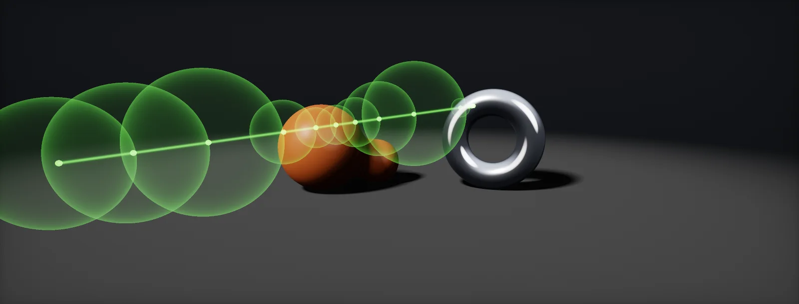

Ray Marching
The general method behind parallax, clouds, SDF shapes and raymarched eyes: fixed steps, bracketing and secant refinement, sphere tracing distance fields, height fields with bounding slabs, volumes, step budgets and jitter, and loops on a GPU, built in Unity HDRP and Unreal.

Fixed-step marching
Many effects need to know where a ray first meets something that has no triangles: a height map under a flat polygon, an iris inside an eyeball, a cloud, a distance field. When there is no formula for the intersection, the shader : it walks along the ray P(t) = O + t·D in steps, tests each point, and stops when the point is inside the surface.
The simplest version uses fixed steps. Its weakness shows immediately: the step length decides both the cost and what can be missed.
Two kinds of error appear. The hit is found up to one step too late (the red dot sits inside the surface, not on it), and anything thinner than a step can be skipped entirely: the spike disappears. Shorter steps fix both and cost more. The rest of this unit is about getting the same answer with fewer steps.
Bisection and secant refinement
When a step lands below the surface, the previous one was above it. The surface lies between them: the two points bracket it. Instead of marching on with tiny steps, the shader can narrow that bracket. Write d(t) for the height of the ray above the surface: positive before the hit, negative after.
- Bisection: test the middle, keep the half that still contains the sign change. Each step halves the error.
- Secant (or false position): assume d is a straight line between the two points and jump to where that line crosses zero. Near a smooth surface this converges much faster.
The usual recipe is coarse steps to find a bracket, then one to three secant steps. Parallax occlusion mapping uses exactly this (fast POM), and so does the raymarched iris. Secant steps need the surface to be smooth between the two points; on noisy height maps, bisection is the safer choice.
Sphere tracing
If the scene can tell how far the nearest surface is from any point, the march can take the largest safe step every time. That function is a (SDF): negative inside, positive outside, and its value is a distance you can step without hitting anything. Marching by it is sphere tracing (Hart, 1996):
In open space the steps are huge; near a surface they shrink, so the hit is found precisely without a refinement stage. The expensive case is a ray that grazes a surface without hitting it: every step is short and the step budget runs out. That is why SDF renderings get blotchy at silhouettes when the budget is too low.
Distance fields for spheres, boxes, capsules and tori are short formulas, and they combine with min (union) and smooth minimum (blobby blends). Inigo Quilez's list of distance functions is the standard reference. A field that is not an exact distance (scaled, twisted, noisy) needs shorter steps, often 0.5–0.8 of the value, or the march overshoots.
Height fields and bounding slabs
A height field stores one height per point on a plane: a parallax map, a terrain, the iris of an eye. It is not a distance field, so sphere tracing does not apply directly, but it has another property worth using: every point of the surface lies between its lowest and highest value. Outside that slab, nothing can be hit.
Start the march where the ray enters the slab and stop where it leaves; the space above is skipped for free. The step count then depends on two things: the slab thickness and the view angle. Looking straight down, the ray crosses the slab quickly; at grazing angles it travels a long way inside it. Good height-field marchers scale their step count with the angle (adaptive steps).
For a texture-based height field each step is a texture fetch. For an analytic height field (a formula) each step is arithmetic, which is usually far cheaper; the iris profile is an example.
Absorption and volumes
Fog, clouds, smoke, coloured glass and water have no single surface that decides their look. Light is absorbed a little at every point it passes, and the fraction that survives a distance d follows : T = e−μd, with μ the absorption per unit length. Each colour channel has its own μ, which is why coloured media get deeper in colour with distance: a window is clear face-on and green along its edge, shallow water shows the bottom and deep water turns blue.
Nobody types μ by hand, so renderers ask for the colour reached at a reference distance and compute μ = −ln(colour) / distance (HDRP Transmittance Color and Absorption Distance, OpenPBR transmission_color and transmission_depth):
The distance is whatever the light crosses: a pane's thickness / cos θ, the depth difference under a water surface, the gap between a back face and a front face, a baked thickness map. When the density varies along the way, as in clouds, the march cannot use one exponent. It steps through, and multiplies the transmittance by e−σΔt per step; the product of all the factors is how much of the background comes through:
Sampling at the start of each step is biased; sampling in the middle is much more accurate for the same count. Real volume renderers add lighting at each sample, which is where most of the cost goes (marching a cloud layer). Two shortcuts carry over from surfaces: stop early once the transmittance is close to zero, and skip empty space with a coarse bound.
Step budgets, banding and jitter
A fixed step pattern samples every ray at the same depths. With few steps, the error is the same for neighbouring pixels and shows as bands or rings. Offsetting the start of each ray by a random fraction of a step (a different one per pixel, ideally from a blue-noise texture) turns the bands into fine noise, which temporal anti-aliasing averages away over a few frames:
Cost is steps × the cost per step. Keep the per-step work minimal and move everything else out of the loop:
- One evaluation per step. Compute normals, lighting and detail once at the hit.
- Texture fetches are the expensive part; an analytic function in the loop is usually several times cheaper.
- Early outs for rays that cannot hit (outside the bounds, pointing away) cost almost nothing and save the most.
- Scale the budget with what is on screen: fewer steps at a distance, none beyond a fade distance.
GPU loops: divergence, derivatives, bounds
Three GPU details decide whether a marcher works and how fast it runs:
- Divergence. Pixels run in groups (waves) that execute the same instruction. If one pixel needs 30 steps and its neighbours 4, the whole group waits for 30. Coherent step counts (smooth surfaces, adaptive counts from the view angle) keep groups efficient.
- Derivatives. Inside a loop or branch, neighbouring pixels may be in different iterations, so the ddx/ddy that pick the mip become undefined: flickering mips or seams. Take the UV gradients once before the loop and sample with explicit gradients (mips and SampleGrad).
- Loop bounds. Give the loop a constant maximum and break early. A loop with a material property as its bound may be unrolled or rejected by some compilers; a constant bound with a break compiles everywhere.
And one space detail: march in the space where the data lives. Height fields in tangent space, an eye in object space, a volume in its own box. Transform the ray once, not the data per step.
Build it in Unity HDRP
The route builds the sphere-tracing example as a material: a cube mesh is the bounding volume, a Custom Function marches a distance field inside it, and Alpha Clipping discards the pixels that miss. It is the smallest complete ray marcher in Shader Graph and the template for anything SDF-based. Written for Unity 6 with HDRP 17; Unity 2022 LTS works the same apart from a few renamed menu entries.
- Put
RayMarchSDF.hlslinAssets/Shaders/. Create a cube (GameObject > 3D Object > Cube); its unit size matches the bounds the file assumes. - Create the graph: in the Project window, Create > Shader Graph > HDRP > Lit Shader Graph. Open it and check the Graph Inspector > Graph Settings: enable Alpha Clipping; leave Surface Type Opaque.
- Add a Position node (Object), a View Direction node (Object), a Time node and two Float properties
MaxSteps(default 48) andEpsilon(0.001). In the graph, add a Custom Function node. Set Type toFile, Source toRayMarchSDF.hlsland Name toSphereTrace(without the_floatsuffix). Add the inputs PositionOS (Vector 3), ViewDirOS (Vector 3), Time (Float), MaxSteps (Float), Epsilon (Float) and the outputs Hit (Float), HitPositionOS (Vector 3), NormalOS (Vector 3), Steps (Float), in that order and with those types: they must match the function's parameters. - Connect Hit to Alpha and set Alpha Clip Threshold to 0.5: rays that miss leave a hole in the cube.
- Lighting: transform NormalOS with a Transform node (Object to Tangent, Type Direction) into Normal (Tangent Space), or set the graph's Fragment Normal Space to Object and connect it directly. Base Color and Smoothness as for any Lit material.
- Debug the cost: temporarily connect Steps / MaxSteps to Emission. Bright pixels are expensive; they cluster at silhouettes and grazing angles, as the sphere-tracing chapter predicts.
- Optional: write the hit depth. Enable Depth Offset in the graph settings and feed the distance between the cube surface and the hit along the view ray, so other objects intersect the shape correctly.
#ifndef ATLAS_RAYMARCH_SDF_INCLUDED
#define ATLAS_RAYMARCH_SDF_INCLUDED
// Sphere tracing a small signed-distance scene inside a cube mesh (object space, cube from -0.5 to 0.5).
// Replace Atlas_Scene with your own distance function.
float Atlas_SdSphere(float3 p, float r) { return length(p) - r; }
float Atlas_SdTorus(float3 p, float2 t) { float2 q = float2(length(p.xz) - t.x, p.y); return length(q) - t.y; }
float Atlas_SmoothMin(float a, float b, float k)
{
float h = saturate(0.5 + 0.5 * (b - a) / k);
return lerp(b, a, h) - k * h * (1.0 - h);
}
float Atlas_Scene(float3 p, float time)
{
float s = Atlas_SdSphere(p - float3(0.0, 0.08 * sin(time), 0.0), 0.2);
float t = Atlas_SdTorus(p, float2(0.28, 0.06));
return Atlas_SmoothMin(s, t, 0.08);
}
float3 Atlas_SceneNormal(float3 p, float time)
{
const float2 e = float2(1e-3, 0.0); // central differences: 6 extra scene evaluations
return normalize(float3(Atlas_Scene(p + e.xyy, time) - Atlas_Scene(p - e.xyy, time),
Atlas_Scene(p + e.yxy, time) - Atlas_Scene(p - e.yxy, time),
Atlas_Scene(p + e.yyx, time) - Atlas_Scene(p - e.yyx, time)));
}
// PositionOS: the cube's surface point; ViewDirOS: View Direction node in Object space (towards the camera).
void SphereTrace_float(float3 PositionOS, float3 ViewDirOS, float Time, float MaxSteps, float Epsilon,
out float Hit, out float3 HitPositionOS, out float3 NormalOS, out float Steps)
{
float3 ro = PositionOS;
float3 rd = -normalize(ViewDirOS); // from the camera into the cube
float t = 0.0;
Hit = 0.0; Steps = 0.0;
[loop]
for (int i = 0; i < 128; i++)
{
if (i >= (int)MaxSteps) break;
float d = Atlas_Scene(ro + rd * t, Time);
Steps = i + 1;
if (d < Epsilon) { Hit = 1.0; break; } // close enough: call it a hit
t += d; // safe step: nothing is closer than d
if (t > 1.8) break; // left the cube (its diagonal is ~1.73)
}
HitPositionOS = ro + rd * t;
NormalOS = Hit > 0.5 ? Atlas_SceneNormal(HitPositionOS, Time) : float3(0.0, 0.0, 1.0);
}
#endifThe loop has a fixed upper bound (128) and breaks early on MaxSteps, which keeps the compiler from unrolling it. The normal costs six extra scene evaluations; for heavy scenes compute it once at the hit, never inside the loop.
Build it in Unreal Engine
The same sphere tracer as a Custom node on a cube. Unreal Custom nodes cannot declare functions directly, so the distance functions sit in a local struct, a common pattern for Custom-node code. Written for Unreal Engine 5.6 and later. Substrate is production-ready from 5.7; check Project Settings > Rendering > Substrate to see which material model a project uses.
- Create a material with Blend Mode
Masked, Shading ModelDefault Lit, and untick Tangent Space Normal (the march returns a world-space normal; the scene here is unrotated, so local and world axes match). - Add a Custom node with
SphereTrace.ush. Inputs:Pfrom Absolute World Position,Ofrom Object Position,Scaleas a scalar (100 for the engine cube),CamVecfrom CameraVector,Time,MaxSteps(48),Epsilon(0.001). Output TypeCMOT Float 1; Additional OutputsNormalWS(Float 3) andSteps(Float 1). - Connect the result to Opacity Mask (clip value 0.5) and NormalWS to Normal. Place the material on the engine cube.
- Cost view: put Steps / MaxSteps into Emissive Color temporarily, or use Shader Complexity view mode, which also reflects the loop.
- For a rotated or scaled object, transform
roandrdwith Transform nodes (World to Local) before the Custom node, and the normal back with Local to World.
// Custom node "SphereTrace". Inputs: P (float3, Absolute World Position), O (float3, Object Position),
// Scale (float, the object's size in cm, e.g. 100), CamVec (float3, CameraVector), Time (float),
// MaxSteps (float), Epsilon (float). Output Type: CMOT Float 1 (hit, use as Opacity Mask).
// Additional Outputs: NormalWS (CMOT Float 3), Steps (CMOT Float 1).
// Helper functions live in a local struct: the usual way to define functions inside a Custom node.
struct SDFScene
{
float SdSphere(float3 p, float r) { return length(p) - r; }
float SdTorus(float3 p, float2 t) { float2 q = float2(length(p.xy) - t.x, p.z); return length(q) - t.y; } // Z-up
float SMin(float a, float b, float k) { float h = saturate(0.5 + 0.5 * (b - a) / k); return lerp(b, a, h) - k * h * (1.0 - h); }
float Map(float3 p, float time) { return SMin(SdSphere(p - float3(0, 0, 0.08 * sin(time)), 0.2), SdTorus(p, float2(0.28, 0.06)), 0.08); }
};
SDFScene s;
float3 ro = (P - O) / Scale; // local space, the mesh spans -0.5 .. 0.5
float3 rd = -normalize(CamVec); // CameraVector points from the pixel to the camera
float t = 0.0, hit = 0.0;
Steps = 0.0;
for (int i = 0; i < 128; i++)
{
if (i >= (int)MaxSteps) break;
float d = s.Map(ro + rd * t, Time);
Steps = i + 1;
if (d < Epsilon) { hit = 1.0; break; }
t += d;
if (t > 1.8) break;
}
float3 p = ro + rd * t;
float2 e = float2(1e-3, 0.0);
NormalWS = normalize(float3(s.Map(p + e.xyy, Time) - s.Map(p - e.xyy, Time),
s.Map(p + e.yxy, Time) - s.Map(p - e.yxy, Time),
s.Map(p + e.yyx, Time) - s.Map(p - e.yyx, Time)));
return hit;Pixel Depth Offset can push the depth to the hit so the shape intersects other geometry correctly; it disables some early depth optimisations, so use it only where you see the intersection.
Sources and further reading
The formulas and engine details in this unit come from these references. Engine documentation changes between versions.
- PaperSphere tracing: a geometric method for the antialiased ray tracing of implicit surfacesJohn C. Hart · The Visual Computer, 1996The original sphere-tracing paper.
- ArticleDistance functionsInigo QuilezExact distance functions for primitives and how to combine them.
- ArticleRaymarching distance fieldsInigo QuilezPractical sphere tracing, normals and step control.
- BookPhysically Based Rendering, 4th edition: volume scatteringPharr, Jakob, HumphreysTransmittance and why marching volumes integrates.
- TalkPhysically based sky, atmosphere and cloud rendering in FrostbiteSébastien Hillaire · SIGGRAPH 2016Jittered volume marching with temporal reprojection.
- DocsShader Graph Custom Function nodeUnityFile mode, function naming and texture types used by the build files.